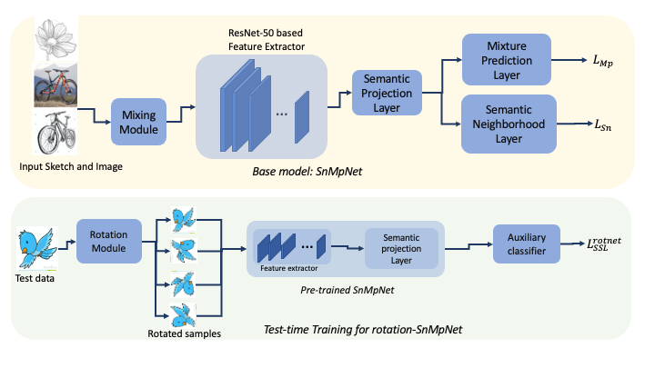
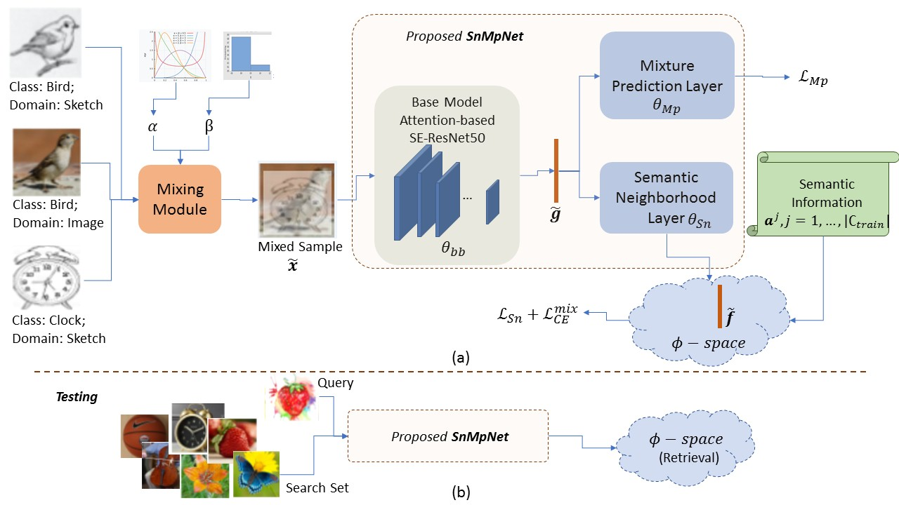
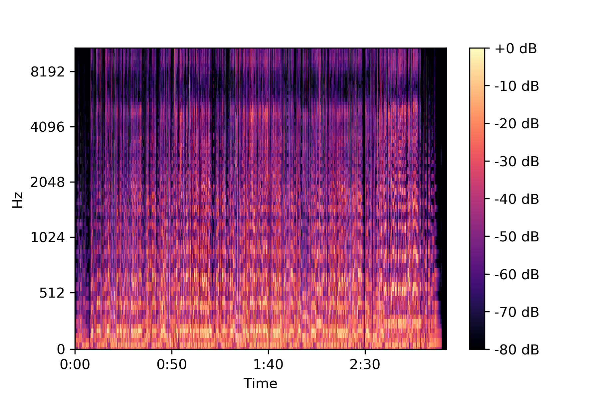
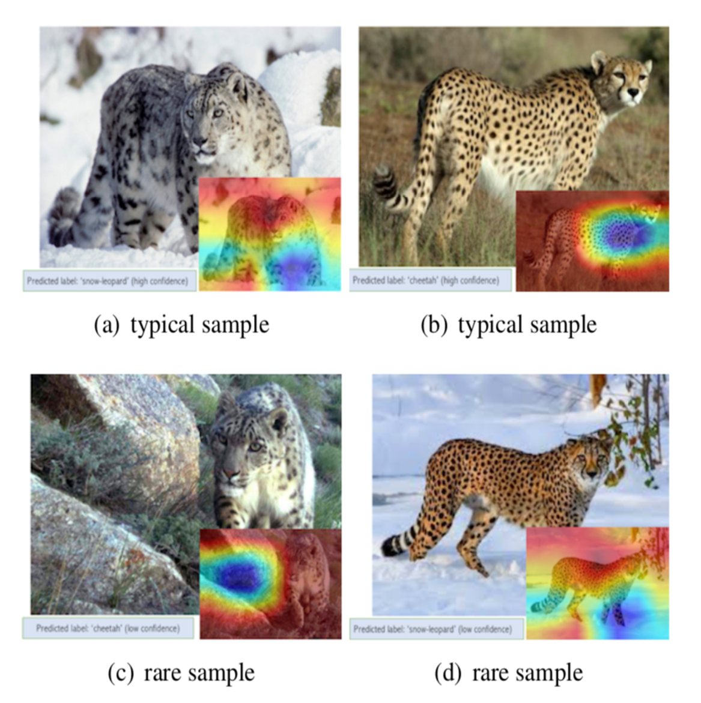
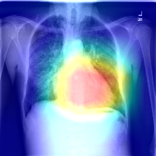
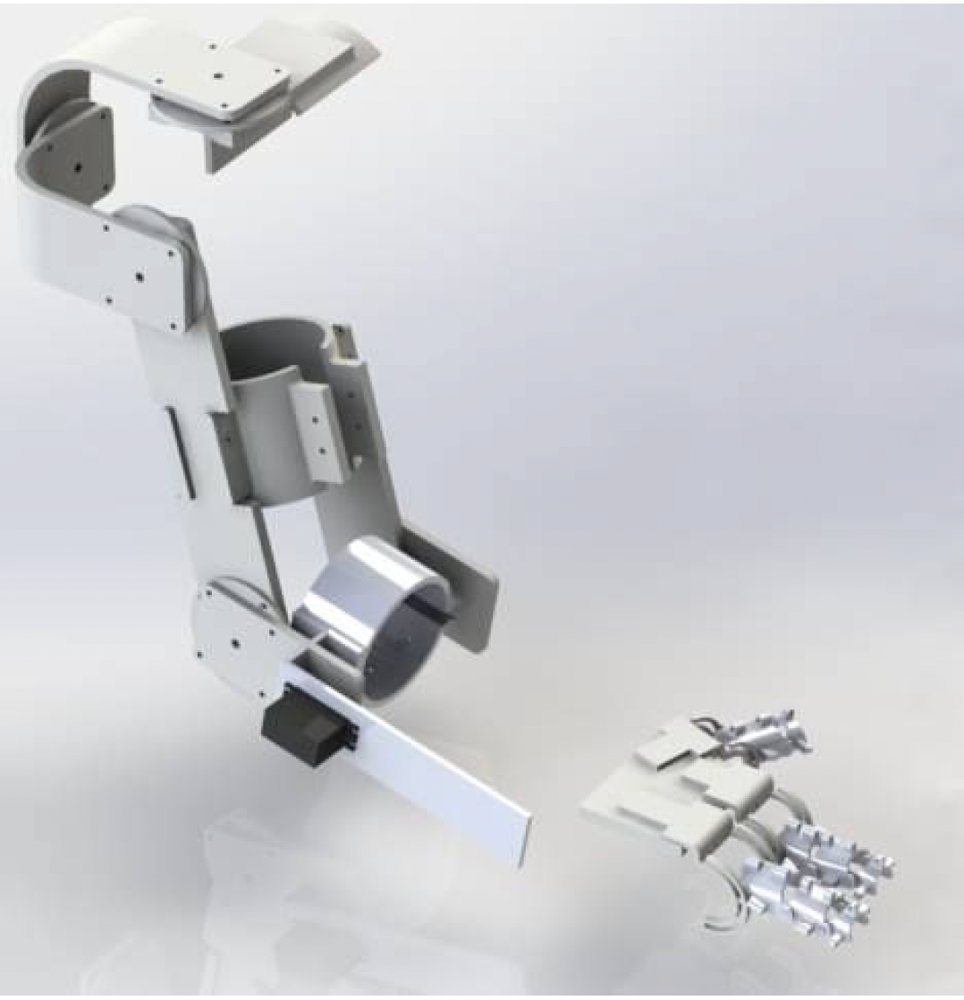

News
- [April 2022] Started my Master's at Universität des Saarlandes.
- [August 2021] Two papers accepted to ICCV 2021! 1 main track and 1 workshop.
- [June 2021] One paper on singing voice detection accepted to Interspeech 2021!
- [May 2020] Graduated from IIT Kharagpur after 4 wonderful years.
- [December 2018] Presented my first research paper at ICVGIP 2018 held at IIIT Hyderabad.
- [July 2016] Started my journey at IIT Kharagpur as an undergrad.
|
|
Research
Broadly, I am interested in computer vision, music information retrieval, and time series forecasting. Below are some of my representative publications.
|
* denotes equal contribution
|

|
Test-time Training for Data-efficient UCDR
Soumava Paul,
Titir Dutta,
Aheli Saha,
Abhishek Samanta,
Soma Biswas
arXiv preprint
abstract /
bibtex /
arXiv /
Code
Image retrieval under generalized test scenarios has gained significant momentum in literature, and the
recently proposed protocol of Universal Cross-domain Retrieval is a pioneer in this direction. A common practice in any such generalized
classification or retrieval algorithm is to exploit samples from many domains during training to learn a domain-invariant representation of data.
Such criterion is often restrictive, and thus in this work, for the first time, we explore the generalized retrieval problem in a data-efficient
manner. Specifically, we aim to generalize any pre-trained cross-domain retrieval network towards any unknown query domain/category, by means of
adapting the model on the test data leveraging self-supervised learning techniques. Toward that goal, we explored different self-supervised loss
functions~(for example, RotNet, JigSaw, Barlow Twins, etc.) and analyze their effectiveness for the same. Extensive experiments demonstrate the
proposed approach is simple, easy to implement, and effective in handling data-efficient UCDR.
@misc{paul2023testtime,
title={Test-time Training for Data-efficient UCDR},
author={Soumava Paul and Titir Dutta and Aheli Saha and Abhishek Samanta and Soma Biswas},
year={2023},
eprint={2208.09198},
archivePrefix={arXiv},
primaryClass={cs.CV}
}
}
|
|

|
Universal Cross-Domain Retrieval: Generalizing Across Classes and Domains
Soumava Paul*,
Titir Dutta*,
Soma Biswas
ICCV 2021
abstract /
bibtex /
proceedings /
arXiv /
Code / Video /
slides /
poster
In this work, for the first time, we address the problem of universal cross-domain retrieval, where the test data
can belong to classes or domains which are unseen during training. Due to dynamically increasing number of categories and practical constraint of
training on every possible domain, which requires large amounts of data, generalizing to both unseen classes and domains is important. Towards that
goal, we propose SnMpNet (Semantic Neighbourhood and Mixture Prediction Network), which incorporates two novel losses to account for the unseen
classes and domains encountered during testing. Specifically, we introduce a novel Semantic Neighborhood loss to bridge the knowledge gap between
seen and unseen classes and ensure that the latent space embedding of the unseen classes is semantically meaningful with respect to its neighboring
classes. We also introduce a mix-up based supervision at image-level as well as semantic-level of the data for training with the Mixture Prediction
loss, which helps in efficient retrieval when the query belongs to an unseen domain. These losses are incorporated on the SE-ResNet50 backbone to
obtain SnMpNet. Extensive experiments on two large-scale datasets, Sketchy Extended and DomainNet, and thorough comparisons with state-of-the-art
justify the effectiveness of the proposed model.
@InProceedings{Paul_2021_ICCV,
author = {Paul, Soumava and Dutta, Titir and Biswas, Soma},
title = {Universal Cross-Domain Retrieval: Generalizing Across Classes and Domains},
booktitle = {Proceedings of the IEEE/CVF International Conference on Computer Vision (ICCV)},
month = {October},
year = {2021},
pages = {12056-12064}
}
}
|
|

|
Knowledge Distillation for Singing Voice Detection
Soumava Paul,
Gurunath Reddy M,
K. Sreenivasa Rao,
PP Das
INTERSPEECH 2021
abstract /
bibtex /
proceedings /
arXiv /
Code /
Video /
slides
Singing Voice Detection (SVD) has been an active area of research in music information retrieval (MIR).
Currently, two deep neural network-based methods, one based on CNN and the other on RNN, exist in literature that learn optimized features for
the voice detection (VD) task and achieve state-of-the-art performance on common datasets. Both these models have a huge number of
parameters (1.4M for CNN and 65.7K for RNN) and hence not suitable for deployment on devices like smartphones or embedded sensors with limited
capacity in terms of memory and computation power. The most popular method to address this issue is known as knowledge distillation in deep learning
literature (in addition to model compression) where a large pre-trained network known as the teacher is used to train a smaller student network.
Given the wide applications of SVD in music information retrieval, to the best of our knowledge, model compression for practical deployment has not
yet been explored. In this paper, efforts have been made to investigate this issue using both conventional as well as ensemble knowledge distillation
techniques.
@inproceedings{paul21b_interspeech,
author={Soumava Paul and Gurunath Reddy M and K. Sreenivasa Rao and Partha Pratim Das},
title={{Knowledge Distillation for Singing Voice Detection}},
year=2021,
booktitle={Proc. Interspeech 2021},
pages={4159--4163},
doi={10.21437/Interspeech.2021-636}
}
}
|
|

|
Addressing Target Shift in Zero-shot Learning using Grouped Adversarial Learning
Saneem Ahmed Chemmengath*,
Soumava Paul*,
Samarth Bharadwaj,
Suranjana Samanta,
Karthik Sankaranarayanan
ICCV 2021 MELEX Workshop (Oral)
abstract /
bibtex /
proceedings /
arXiv /
Code /
Video
Zero-shot learning (ZSL) algorithms typically work by exploiting attribute correlations to make predictions for
unseen classes. However, these correlations do not remain intact at test time in most practical settings, and the resulting change in these
correlations leads to adverse effects on zero-shot learning performance. In this paper, we present a new paradigm for ZSL that: (i) utilizes the
class-attribute mapping of unseen classes to estimate the change in target distribution (target shift), and (ii) propose a novel technique called
grouped Adversarial Learning (gAL) to reduce negative effects of this shift. Our approach is widely applicable for several existing ZSL algorithms,
including those with implicit attribute predictions. We apply the proposed technique (gAL) on three popular ZSL algorithms: ALE, SJE, and DEVISE,
and show performance improvements on 4 popular ZSL datasets: AwA2, aPY, CUB, and SUN.
@InProceedings{Chemmengath_2021_ICCV,
author = {Chemmengath, Saneem A. and Paul, Soumava and Bharadwaj, Samarth and Samanta, Suranjana and Sankaranarayanan, Karthik},
title = {Addressing Target Shift in Zero-Shot Learning Using Grouped Adversarial Learning},
booktitle = {Proceedings of the IEEE/CVF International Conference on Computer Vision (ICCV) Workshops},
month = {October},
year = {2021},
pages = {2368-2377}
}
}
|
|

|
Jointly Learning Convolutional Representations to Compress Radiological Images and Classify Thoracic Diseases in the Compressed Domain
Ekagra Ranjan*, Soumava Paul*, Siddharth Kapoor,
Aupendu Kar,
Ramanathan Sethuraman,
Debdoot Sheet
ICVGIP, ACM, 2018 (Oral)
abstract /
bibtex /
proceedings /
Code /
slides
Deep learning models trained in natural images are commonly used for different classification tasks in the
medical domain. Generally, very high dimensional medical images are down-sampled by using interpolation techniques before feeding them to deep
learning models that are ImageNet compliant and accept only low-resolution images of size 224 x 224 px. This popular technique may lead to the
loss of key information thus hampering the classification. Significant pathological features in medical images typically being small sized and
highly affected. To combat this problem, we introduce a convolutional neural network (CNN) based classification approach which learns to reduce
the resolution of the image using an autoencoder and at the same time classify it using another network, while both the tasks are trained jointly.
This algorithm guides the model to learn essential representations from high-resolution images for classification along with reconstruction. We
have used the publicly available dataset of chest x-rays to evaluate this approach and have outperformed state-of-the-art on test data. Besides,
we have experimented with the effects of different augmentation approaches in this dataset and report baselines using some well known ImageNet
class of CNNs.
@inproceedings{ranjan2018jointly,
title={Jointly learning convolutional representations to compress radiological images and classify thoracic diseases in the compressed domain},
author={Ranjan, Ekagra and Paul, Soumava and Kapoor, Siddharth and Kar, Aupendu and Sethuraman, Ramanathan and Sheet, Debdoot},
booktitle={Proceedings of the 11th Indian Conference on computer vision, graphics and image processing},
pages={1--8},
year={2018}
}
}
|
|

|
ArMyo
LBS Hall (IIT Kgp) Hardware Modelling Team
Report /
Code
Our submission for the Inter-Hall Hardware Modelling Competiton at IIT Kgp in 2019. We built a robotic
exoskeleton system for assisting patients with muscular atrophy. Secured 4th place out of 15 teams.
|
Misc
- In my downtime, I like to play tennis, pingpong, and football. I have played tennis for more than 15 years and translate my racquet skills to be half-decent
at pingpong. I also bike sometimes around the hills of Saarbrücken.
- I speak English, Bengali, and Hindi natively und ich spreche ein bisschen Deutsch.
- On weekends, I follow the English Premier League and overthink which players to pick for my
fantasy football team. My favorite footballers of all-time
are Son Heung-min and Zlatan Ibrahimović.
- I have watched The Office (US) at least 10 times, back and forth.
- I use mvp18 as my web handle for social accounts, a nickname I came up with when I turned (you guessed it) 18! I had just cracked
IIT-JEE and felt like a real hotshot back then. The next 4 years couldn't have been any more humbling :')
- In an earlier life, I could write.
|
This revolver map seemed kinda cool. It shows total webpage visits since April 13, 2023.
|
.jpeg){kind=link}